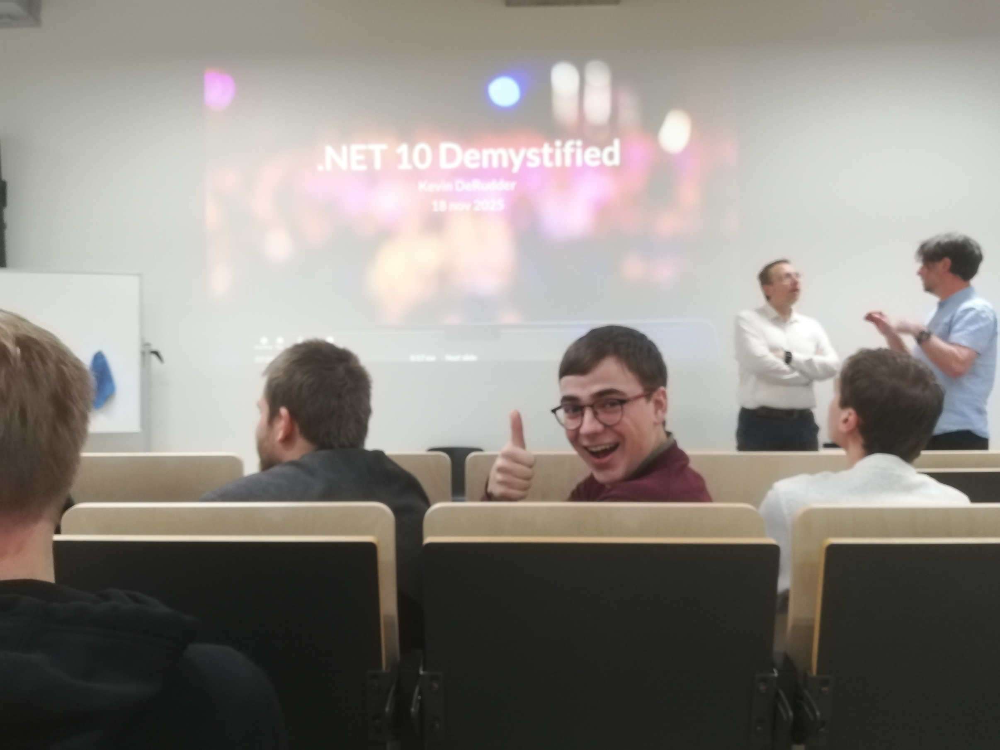
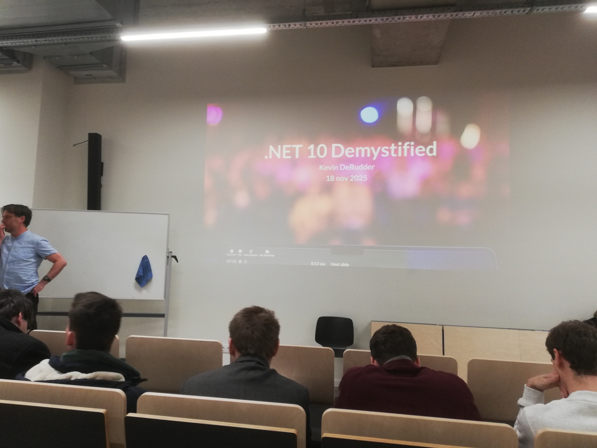
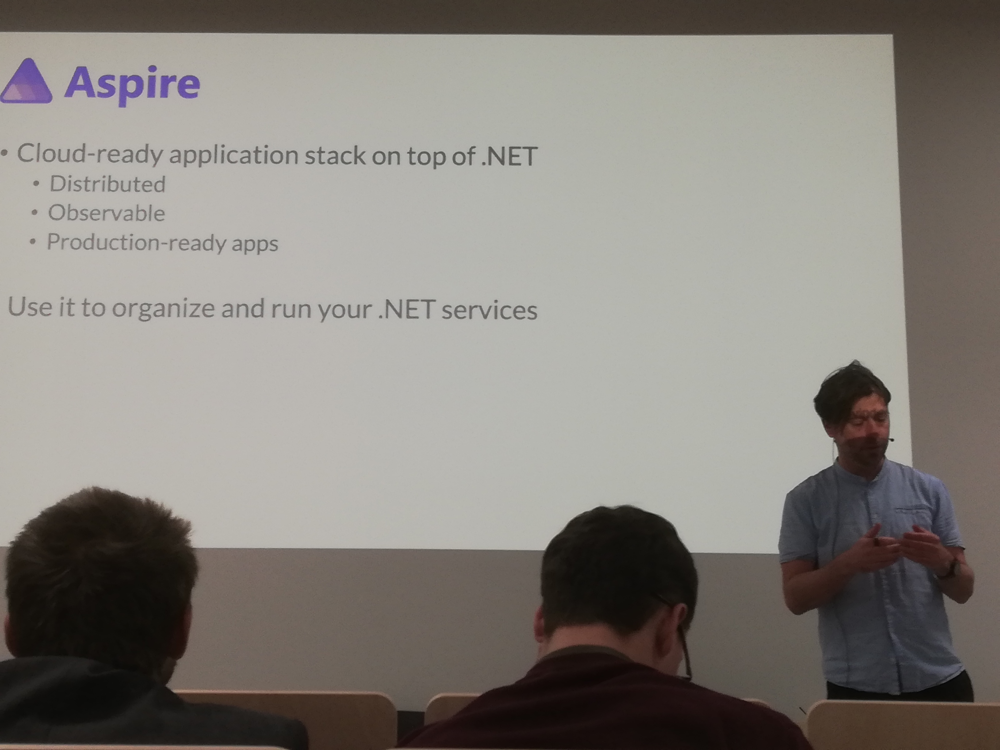
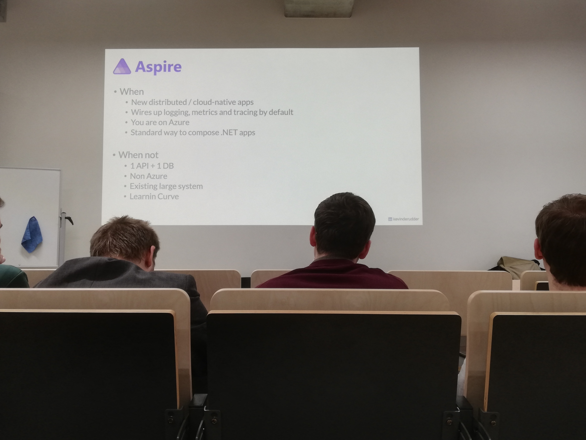
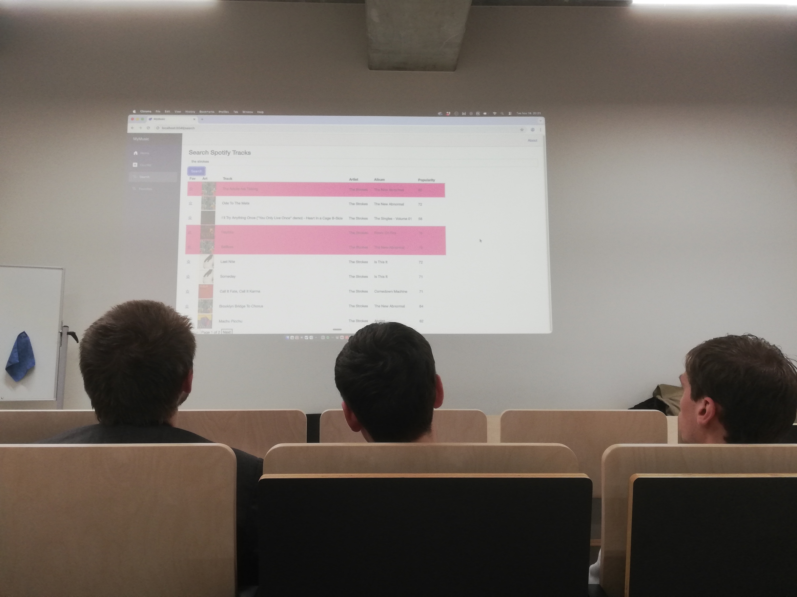

Na bijna twee jaar waarin mijn focus voornamelijk op andere technologieën lag, voelde de Tech&Meet sessie ".NET 10 Demystified" aan Howest Brugge als een fantastische reünie met C#. De sessie werd geleid door Kevin DeRudder, die erin slaagde om de perfecte balans te vinden tussen diepgaande technische updates en een gezonde dosis humor die de hele zaal meekreeg.
De Kracht van .NET 10: Performance en Stabiliteit
Het werd al snel duidelijk dat Microsoft met .NET 10 niet louter voor incrementele verbeteringen kiest, maar vol inzet op snelheid en betrouwbaarheid. De prestaties van het framework zijn verder geoptimaliseerd, waardoor het nog efficiënter omgaat met rekenkracht. Voor bedrijven is de aankondiging van de 3-jarige LTS (Long-Term Support) een cruciaal punt; het biedt de nodige stabiliteit om complexe enterprise-applicaties met een gerust hart op dit platform te bouwen.
Ook op het gebied van 'syntactic sugar' kregen we een paar mooie updates te zien. Denk maar aan de introductie van het field keyword in properties en de uitgebreide mogelijkheden voor extension methods. Dit soort toevoegingen lijken misschien klein, maar ze zorgen ervoor dat we als developers aanzienlijk 'cleanere' en leesbaardere code kunnen schrijven.
Blazor vs. JavaScript: "Kill my wife"
Een van de meest memorabele momenten van de avond was een nogal boute uitspraak van Kevin om zijn frustratie met de huidige web-ecosystemen te illustreren. Hij zei: "If there was one time I wanted to kill my wife, it was when I was installing Node modules." Hoewel uiteraard lacherig bedoeld, vatte deze quote perfect de kern van zijn betoog samen: de complexiteit en fragiliteit van moderne JavaScript-workflows versus de robuustheid van Blazor.


Omdat Blazor gebruikmaakt van C# in plaats van JavaScript, heb je als ontwikkelaar een veel krachtigere bondgenoot in je IDE (zoals Visual Studio of JetBrains Rider). De tooling kan veel betere suggesties doen, types strikter controleren en refactoring vlotter laten verlopen dan in de vaak dynamische en onvoorspelbare wereld van JS. De toevoeging van QuickGrid CSS werd getoond als een krachtig middel om razendsnel full-stack interfaces te bouwen zonder de gebruikelijke frontend-hoofdpijn.
Ecosysteem: One Big Happy Family
Tot slot drukte Kevin ons op het hart om Aspire te onderzoeken. Dit is een relatief nieuwe tool binnen het Microsoft-ecosysteem die de integratie tussen verschillende services en microservices naadloos laat verlopen. Het versterkt het gevoel dat .NET inmiddels is uitgegroeid tot "one big happy family", waarbij alle componenten ontworpen zijn om optimaal met elkaar samen te werken.


De avond eindigde zoals vaker bij Howest met een knipoog naar onze eigen tradities: "Everyone's favorite color should be HotPink. No discussion." Een kleur die in onze UI-lessen steevast voor de nodige animo zorgt en ook deze avond in een sfeer van humor en technische verwondering afsloot. Het was een geslaagde sessie die me weer helemaal warm heeft gemaakt voor het .NET-ecosysteem.
Bekijk ook mijn originele post en de discussie op LinkedIn:
Bekijk op LinkedIn